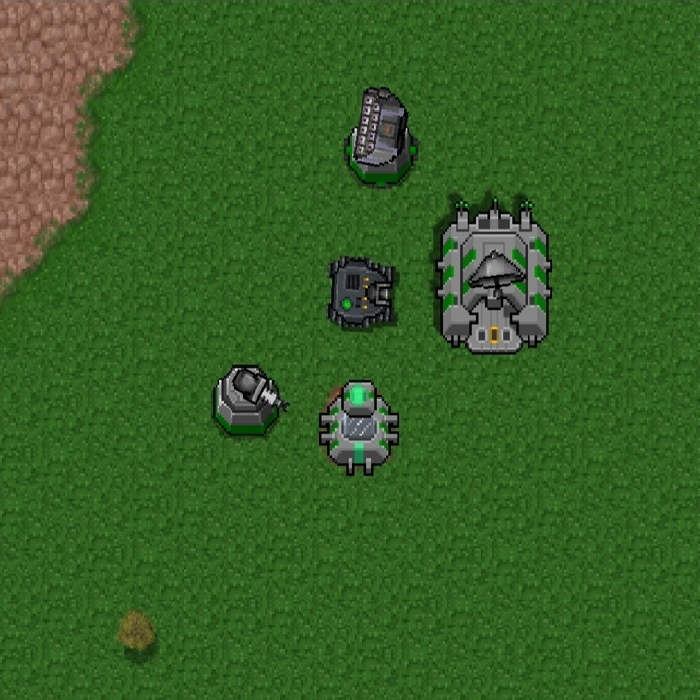
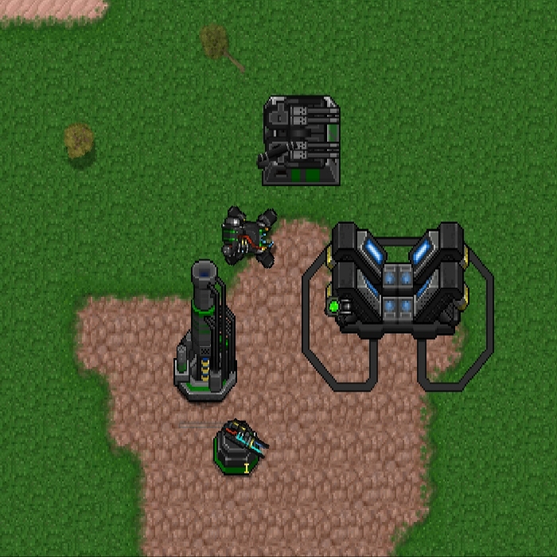
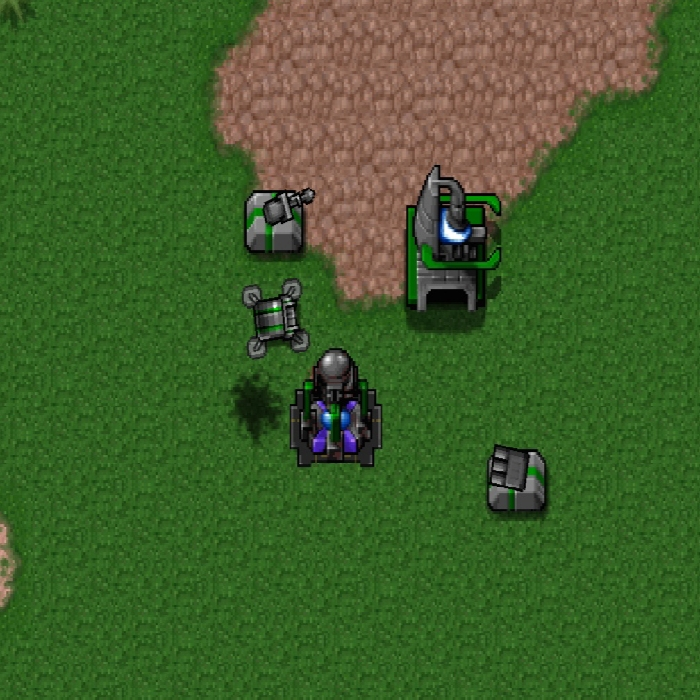

в моде присутствует подробное описание юнитов в котором находятся частички Лора который есть в моде
само описание мода:AEA. Корпорация Black Guard. EK Engineering.
Эти фракции сталкиваются в тотальной битве за абсолютное господство над
100 мирами. Кто одержит победу над всеми? Выбирайте свою фракцию с умом, рекрут, война только началась. мод весит: 1418,90кб
Мб)
фракции
в игре присутствуют 3 уникальных фракции со своими особенностями
уникальными механиками и текстурами
мки

ВГО

ВЭА

описание фракций
ВГО/BGC
Межгалактический Военизированный Горнодобывающий Союз Galactic Black Guard mining Company
- В своём арсенале имеет невероятно мощные наземные единицы,
которые можно снарядить модулями на свой вкус и цвет
- Не имеет полноценного воздушного флота, а морской флот и вовсе отсутствует - Мощнейшая "Эндгейм" техника, но довольно слабая в начале развития - “Ерлигейме„
- Особая техника: Аполлон II, Вдова, Сикисима, Плазма-Жук, Лейте, Тайфун „а соберем же для нашего босса большой урожай„
ВЭА/АЕA
Вооруженная Экспансионная Ассоциация
Armored Exploration Association
Известна благодаря своим стандартам, задающим тренд в военной промышленности
- Имеет самый универсальный арсенал вооружения - Лучшая фракция в начальном развитии - “Ерлигейме”
- Особые войска: Пехота, КП-1, Командир "Зен", Левиафан, Хакер, Хроносфера “Ничего личного, только бизнес, детка”
МКИ/ЕКЕ
Межгалактическая Коалиция Инженеров
EK Engineering - Предоставляет лучшие оборонительные технологии
Использует "Энергию" для вызова орбитальной поддержки
- Особая техника и технологии: Элизабет, Эксельсиор, Толстяк II, Кинетический Удар, Луч Дайсона,
а также обширный спектр орбитальной поддержки "Выложись по полной, это на благо родной планеты!"
основные механики
в моде присутствует много игровых механик в принципе, в оригинальной игре их было тоже не малоло
расскажу об основном
валюты
самая основная валюта это ресурсы „$“
за неё строиться и покупается большинство построек и юнитов
добывается при помощи экстракторов ресурсов и фиброреакторов
более редко использующаяся валюта это уран „ ⚛“
он используется в строительстве некоторых построек и самых сильных юнитов
добывается в специальных строениях с возможностью обменять на ресурсы и обратно
это ресурсы есть у всех фракций но есть и уникальные
и это энергия „⚡“ она есть только у одной фракцыи а именно у МКИ
энергия нужна для вызова помощи,получить энергию можно при помощи
специальных построек таких как солнечные панели,генератор и другие
количество энергии которые можно накопить ограничено до 500 ед.
Но этот предел можно расширить с помощью массива топливных элементов но добавляет +275 ед. хранения
его можно улучшать но предел постройки 10 штук.
заводы
У Каждой фракции свои уникальные заводы и юниты
юниты производятся за ресурсы более продвинутые за ресурсы и уран
есть 5 основных завода это морской,воздушный,наземный,шагоходный и экспериментальный
у разных фракций названия могут отличаться но суть та же что и в оригинальной игре
у каких то фракции могут быть уникальные заводы наперер как у AEA есть уникальный завод казарма
ну каких то заходов может и не быть,
на пример у ВГО нет воздушного(не шитая юнитов) и морского завода.